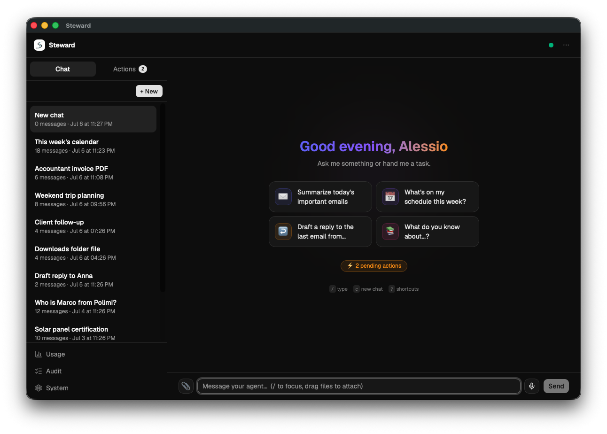
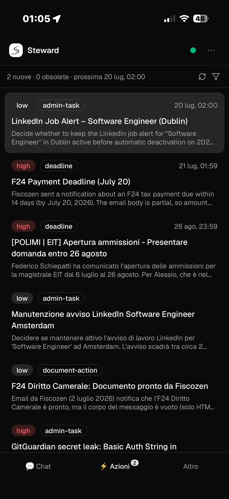
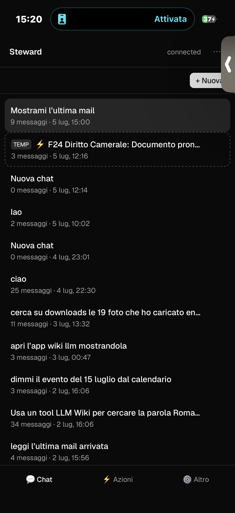

✦
01Chat with real context
It does not guess: it searches your mail, calendar, contacts, files, and wiki. Sources and every tool call remain visible.
- Rich results, not raw text
- Drag-and-drop files and attachments
- Voice with local transcription
Steward is a private personal assistant with memory. It knows your work, finds what you have forgotten, and prepares the next step — without taking control away from you.

An assistant should not be another app you have to manage.
Steward connects information that currently lives in separate places on your Mac and makes it available through a natural conversation.
It does not guess: it searches your mail, calendar, contacts, files, and wiki. Sources and every tool call remain visible.
Facts, decisions, and commitments become Markdown pages linked to their original sources. No opaque memory hidden inside a model.
Action Center reads recent signals and prepares replies, follow-ups, and events. You review, edit, or approve.
She proposed Friday at 3:00 PM. Your calendar is free.
Describe the content, person, or moment. Hybrid search combines keywords, trigrams, and semantic vectors across your local indexes.
“Find the invoice PDF my accountant sent me last month.”
Write or speak as you would to someone who understands your work.
It consults only the local tools and sources needed for your request.
It composes an answer or a concrete, verifiable proposal.
Reads can flow; every change to the outside world requires approval.
Trust does not depend on the model “behaving well.” It is enforced by deterministic code around the model.
Unknown tools are blocked. Permitted read operations are explicitly allow-listed.
Emails, events, and writes become approval cards: approve, edit, deny, or request a revision.
Every decision, tool call, and operation is recorded in a local, redacted audit log.
Re: Solar panel certification
Three operating planes separate conversation, background automation, and write reliability.
:4317Sessions · policy · WebSocket · files · speech · push:4000Capability tiers · fallbackThe client communicates with the host over HTTP and WebSocket. The host runs the agent and routes every tool call to MCP connectors under a default-deny policy.
React PWA, Pi sessions, WebSocket streaming, files, authentication, and policy.
apps/web · apps/host.emlx mirror, hybrid search, threads, attachments, and wiki promotion.
mail-mirror · mail-mcp · promoterLocally indexed calendars and contacts, with approved writes via AppleScript.
calendar-mcp · contacts-mcpMarkdown, wikilinks, knowledge graph, multimodal ingest, and semantic search.
apps/llm-wikiA proactive inbox of follow-ups, replies, and proposals ready for review.
apps/action-centerTiered models, fallback, costs, tokens, and latency attributed by service.
llm-gateway · usage-ledgerFile search and parsed read-only commands without invoking a real shell.
apps/shell-mcpJournal before execute, mirror confirmation, and idempotent retries.
packages/write-ops

Steward keeps running on your Mac. The phone PWA connects over HTTPS through a private Tailscale network and receives Web Push notifications when your decision is needed.
TypeScript ESM, React, Vite, Swift, SQLite, and open protocols. Clone the repository and start the three main processes.
# install dependencies
npm install
# gateway, host, and interface
npm run dev -w @steward/llm-gateway
npm run dev -w @steward/host
npm run dev -w @steward/webA local, inspectable assistant under your control.
Explore Steward on GitHub ↗